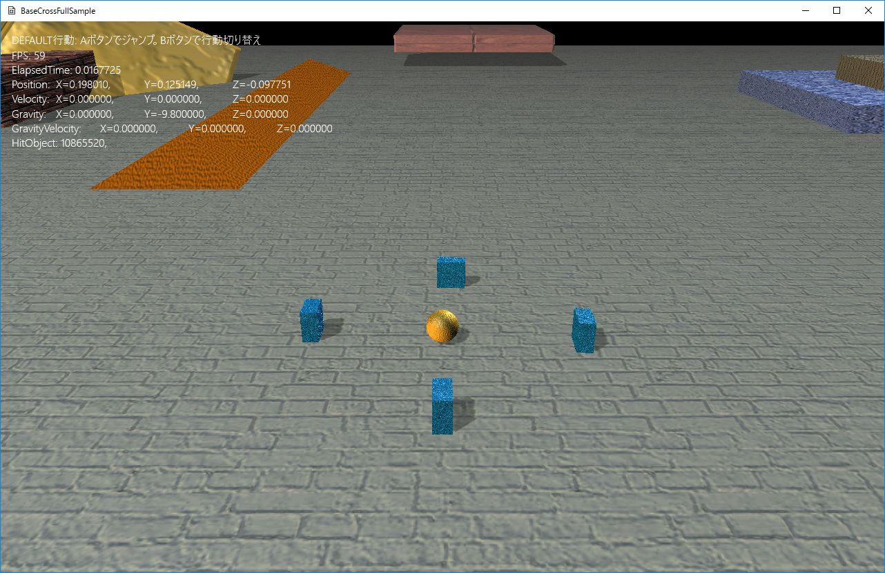
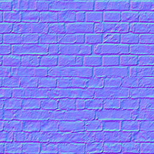

１．フルバージョンチュートリアル
１０５．階層化ステートマシンとリアルな描画
このサンプルはFullTutorial005というディレクトリに含まれます。BaseCrossDx11.slnというソリューションを開くとDx11版が起動します。
リビルドして実行すると以下の画面が出てきます。

図0105a
動画は以下になります。
プレイヤー概要
今項のサンプルのプレイヤーは、前項とは少し違います。Bボタンを押すことによって、Aボタンの役割が変わります。起動直後はAボタンでジャンプします。これは前項と変わりません。しかしBボタンを1回押した後Aボタンを押すと、プレイヤーから、ボールが発射されます。このボールは重力の影響を受けることがなく、何かに当たると、その角度に合わせて反発します。そして、ゲーム領域から外に出ると消えます。
今回のプレイヤーには階層化ステートマシンが実装されてます。前項で紹介したステートマシンとは少し扱いが変わります。ステートは同じクラスを使います。
階層化ステートマシン
階層化ステートマシンを実装するには、Player.hの宣言部に、以下のように記述します。
//--------------------------------------------------------------------------------------
/// プレイヤー
//--------------------------------------------------------------------------------------
class Player : public GameObject {
//中略
//階層化ステートマシーン
unique_ptr<LayeredStateMachine<Player>> m_StateMachine;
public:
//中略
//アクセサ
//--------------------------------------------------------------------------------------
/*!
@brief ステートマシンを得る
@return ステートマシン
*/
//--------------------------------------------------------------------------------------
unique_ptr<LayeredStateMachine<Player>>& GetStateMachine() {
return m_StateMachine;
}
//初期化
virtual void OnCreate() override;
//中略
};
//初期化
void Player::OnCreate() {
//中略
//ステートマシンの構築
m_StateMachine.reset(new LayeredStateMachine<Player>(GetThis<Player>()));
//最初のステートをPlayerDefaultにリセット
m_StateMachine->Reset(PlayerDefaultState::Instance());
}
階層化ステートマシンのステート変更方法は3種類あります。以下がその方法です。
１、Reset(): スタックをすべてクリアし、Topにステートを設定する ２、Push(): スタックに指定のステートを積む。Topが新しいステートになる ３、Pop(): スタックのTopからステートをなくす。Topの一つ下が新しいTopになる
この仕組みで、どういうメリットがあるかというと、1つ前のステートに簡単に戻れるということです。
例えば敵と戦うというステートがあるとします。そしてあるキャラクターは逃げるというステート中にあり、あるキャラクターはうろつくというステートにあるとします。
そして両キャラクターが敵に遭遇したとします。
逃げるステートのキャラクターは敵と戦うステートに移り、そして戦いが終わると逃げるに戻ります。
うろつくステートのキャラクターは敵と戦うステートに移り、そして戦いが終わるとうろつくに戻ります。
これを、通常のステートマシンで実装するとすると、現在のステートをどこかに保持しておき、戦いが終わったときにその一つ前のステートを取り出してそこにチェンジステートする必要があります。しかし階層化ステートマシンの場合、Popで元のステートに戻れるのです。
また、階層化ステートマシンにはスタックをクリアしてステートを変更するReset()という関数があります。これは、広い意味では普通のステートマシンのチェンジステートと同じ意味になります。
階層化ステートマシンを使ったステート側の処理
さて、階層化ステートマシンを使った場合、各ステートの呼び出される関数にも若干の違いがあります。Push()の場合は、新しいステートのEnter()が呼ばれますが、その際、元のステートにはExit()ではなくSleep()（つまり、眠る）が呼ばれます。
そして、Pop()で元のステートに戻ったときは、それまでのステートのExit()が呼ばれますが、その時、スタックに積んであったステートのWakeUp()（つまり、起きる）が呼ばれます。
つまり、スタックに自分の上に何らかのステートが乗っているときは眠っている状態と解釈されます。Sleep()やWakeUp()はほかの関数と違い、純粋仮想関数ではありません。ですから記述しなくてもビルドは通りますが、Pop()で戻ってきたはずなのにEnter()が呼ばれないと悩む前に、WakeUp()にコードを実装しましょう。
Enter()とWakeUp()そしてExit()とSleep()を分けているのは細かな制御ができるためです。両方、それぞれ同じ処理で良ければ同じコードを書いておくか、同じ行動クラスを呼ぶようにしましょう。
ちなみに、このサンプルはWakeUp()やSleep()は記述しなくても問題ないので実装がありません。
さて、では具体的にプレイヤーの記述はどのようになっているか紹介します。
まず、コントローラのハンドラです。今回はBボタンも使いますので、ハンドラにBボタンを追加します。
以下はProjectBehavior.hにあるハンドラですが
//--------------------------------------------------------------------------------------
/// コントローラのボタンのハンドラ
//--------------------------------------------------------------------------------------
template<typename T>
struct InputHandler {
void PushHandle(const shared_ptr<T>& Obj) {
//コントローラの取得
auto CntlVec = App::GetApp()->GetInputDevice().GetControlerVec();
if (CntlVec[0].bConnected) {
//Aボタン
if (CntlVec[0].wPressedButtons & XINPUT_GAMEPAD_A) {
Obj->OnPushA();
}
//Bボタン
else if (CntlVec[0].wPressedButtons & XINPUT_GAMEPAD_B) {
Obj->OnPushB();
}
}
}
};
BボタンでAボタンの動作を変えます。通常はジャンプですが、1回Bボタンを押すとアタックボールを発射するになります。
そして、そのハンドラのイベントの受付ですが、プレイヤーのヘッダに
//--------------------------------------------------------------------------------------
/// プレイヤー
//--------------------------------------------------------------------------------------
class Player : public GameObject {
//中略
//入力ハンドラー
InputHandler<Player> m_InputHandler;
//中略
public:
//中略
//Aボタン
void OnPushA();
//Bボタン
void OnPushB();
};
//Aボタン
void Player::OnPushA() {
if (GetStateMachine()->GetTopState() == PlayerDefaultState::Instance()) {
switch (m_PlayerAction) {
case PlayerAction::Jump:
GetStateMachine()->Push(PlayerJumpState::Instance());
break;
case PlayerAction::Attack:
GetStateMachine()->Push(PlayerAttackState::Instance());
break;
}
}
}
//Bボタン
void Player::OnPushB() {
switch (m_PlayerAction) {
case PlayerAction::Jump:
m_PlayerAction = PlayerAction::Attack;
break;
case PlayerAction::Attack:
m_PlayerAction = PlayerAction::Jump;
break;
}
}
//Aボタンで動作するアクション
enum class PlayerAction {
Jump,
Attack
};
階層化ステートマシンの実装はAボタンのハンドラに記述があります（赤くなっている部分です）。Push()関数を呼び出しています。
では、Pop()関数はどこから呼ばれているかというと、ジャンプ処理の場合はジャンプステートのPlayerJumpState::Execute()関数にあります。
void PlayerJumpState::Execute(const shared_ptr<Player>& Obj) {
//ジャンプ中も方向変更可能
auto PtrDefault = Obj->GetBehavior<PlayerBehavior>();
PtrDefault->MovePlayer();
auto PtrJump = Obj->GetBehavior<JumpBehavior>();
if (PtrJump->Execute()) {
Obj->GetStateMachine()->Pop();
}
}
アタックステートの場合は、ボールを発射したらすぐにデフォルトステートに戻ります
void PlayerAttackState::Execute(const shared_ptr<Player>& Obj) {
//すぐにステートを戻す
Obj->GetStateMachine()->Pop();
}
リアルな描画
さて、このサンプルにはもう一つのテーマがあります。それはリアルな描画です。このサンプルではプリミティブしか配置されてません。しかし法線マップを利用することで、よりリアルティがある表現が可能になります。
法線マップというのは、かいつまんで言えばでこぼこを法線で表現するという手法です。
どのように表現するかというとテクスチャで表現します。テクスチャは画像ですからRGBAの要素を持ってます。これをVector4の法線と見立てて作成します。すると、以下のような画像が作成できます。

法線マップ
この画像は各値が法線になってますので、シェーダの描画時に光の向きに合わせて各ピクセル色を調整します。
そうすると、サンプル実行画面のプレートのようになるわけです。
また、法線マップをテクスチャの模様に合わせて作成します。以下のような感じです。


テクスチャと法線マップ
そうすると、左側にあるボックスのように、テクスチャの模様が法線マップに合わせて、でこぼこしているように表現できます。法線マップのテクスチャはグラフィックソフト（プラグインが必要な場合あり）や３Ｄソフトで作成することができます。 このようにテクスチャの法線マップの組み合わせでいろんな表現が可能になります。
例えば上の壁模様の法線マップを設定するには、通常のテクスチャのように、リソース登録時に
strTexture = DataDir + L"wall.jpg"; App::GetApp()->RegisterTexture(L"WALL_TX", strTexture); strTexture = DataDir + L"wall_normal.png"; App::GetApp()->RegisterTexture(L"WALL_NORMAL_TX", strTexture);
auto PtrDraw = AddComponent<BcPNTnTStaticDraw>();
PtrDraw->SetMeshResource(L"DEFAULT_PNTnT_CUBE");
PtrDraw->SetTextureResource(L"WALL_TX");
PtrDraw->SetNormalMapTextureResource(L"WALL_NORMAL_TX");
//--------------------------------------------------------------------------------------
/// 位置と法線とタンジェントとテクスチャを持つ入力レイアウトの定義
//--------------------------------------------------------------------------------------
const D3D11_INPUT_ELEMENT_DESC VertexPositionNormalTangentTextureLayout[] =
{
{ "SV_Position", 0, DXGI_FORMAT_R32G32B32_FLOAT, 0,
D3D11_APPEND_ALIGNED_ELEMENT, D3D11_INPUT_PER_VERTEX_DATA, 0 },
{ "NORMAL", 0, DXGI_FORMAT_R32G32B32_FLOAT, 0,
D3D11_APPEND_ALIGNED_ELEMENT, D3D11_INPUT_PER_VERTEX_DATA, 0 },
{ "TANGENT", 0, DXGI_FORMAT_R32G32B32A32_FLOAT, 0,
D3D11_APPEND_ALIGNED_ELEMENT, D3D11_INPUT_PER_VERTEX_DATA, 0 },
{ "TEXCOORD", 0, DXGI_FORMAT_R32G32_FLOAT, 0,
D3D11_APPEND_ALIGNED_ELEMENT, D3D11_INPUT_PER_VERTEX_DATA, 0 },
};
BcPNTnTStaticDraw描画コンポーネントはテクスチャの設定と法線マップの設定を、リソースキーを設定して行います。するとサンプルのような描画になります。
タンジェントとは
タンジェントは接ベクトルともいわれます。メッシュは一般には三角形の集合として表現されます。法線はその面に対する直行する線です。それに対してタンジェントは面に平行なベクトルです。では、このタンジェントはどうやって求めるかですが、一般的には法線とカメラのUp値の外積で求められます。カメラのUp値というのは、カメラの傾きですが、多くの場合Vector3(0.0f,1.0f,0.0f)です。つまりカメラの上に向かうベクトルで、通常はY軸に平行にしますね。しかしカメラが真上から見る視点になるとY軸と重なってしまうのでVector3(0.0f,0.0f,1.0f)のようにZ軸に平行にします。
タンジェントの計算はこの、カメラのUpに使うベクトルを利用します。面の法線がY軸とある一定の角度差より大きいであれば、タンジェントは、法線とVector3(0.0f,1.0f,0.0f)の外積で求められます。一方、面の法線がY軸とある一定の角度差より小さいのであればタンジェントは、法線とVector3(0.0f,0.0f,1.0f)の外積で求められます。
BaseCrossでは、このタンジェントの設定をする関数があります。MeshUtill::SetNormalTangent()関数ですが（スタティック関数）、タンジェント付きのメッシュを自作する場合には使用するといいでしょう。
タンジェントつきのメッシュを自作する
このサンプルでは、あらかじめ登録されたタンジェント付きのメッシュを使ってますが、自作したい場合もあります。そんな場合は、例えば、タンジェント付きボックスを作成する場合、まず
//PNT頂点のCubeを作成 vector<VertexPositionNormalTexture> vertices; vector<uint16_t> indices; MeshUtill::CreateCube(1.0f, vertices, indices);
//タンジェント付きの頂点の配列にコンバート
vector<VertexPositionNormalTangentTexture> new_pntnt_vertices;
for (size_t i = 0; i < vertices.size(); i++) {
//タンジェント付きの頂点の変数
VertexPositionNormalTangentTexture new_pntnt_v;
//PNT頂点からコピー
new_pntnt_v.position = vertices[i].position;
new_pntnt_v.normal = vertices[i].normal;
new_pntnt_v.textureCoordinate = vertices[i].textureCoordinate;
//とりあえずタンジェントは0初期化
new_pntnt_v.tangent = Vector4(0,0,0,0);
//頂点の配列に追加
new_pntnt_vertices.push_back(new_pntnt_v);
}
//タンジェント要素（接ベクトル）を法線から計算 MeshUtill::SetNormalTangent(new_pntnt_vertices);
//メッシュ作成
auto PtrNewMesh =
MeshResource::CreateMeshResource(new_pntnt_vertices, indices, false);
最後にメッシュをリソース登録して、他からも再利用できるようにします。
//リソース登録 App::GetApp()->RegisterResource(L"MY_CUBE", PtrNewMesh);
vector<VertexPositionNormalTexture> vertices;
vector<uint16_t> indices;
//PNT頂点のCubeを作成
MeshUtill::CreateCube(1.0f, vertices, indices);
//タンジェント付きの頂点の配列にコンバート
vector<VertexPositionNormalTangentTexture> new_pntnt_vertices;
for (size_t i = 0; i < vertices.size(); i++) {
//タンジェント付きの頂点の変数
VertexPositionNormalTangentTexture new_pntnt_v;
//PNT頂点からコピー
new_pntnt_v.position = vertices[i].position;
new_pntnt_v.normal = vertices[i].normal;
new_pntnt_v.textureCoordinate = vertices[i].textureCoordinate;
//とりあえずタンジェントは0初期化
new_pntnt_v.tangent = Vector4(0,0,0,0);
//頂点の配列に追加
new_pntnt_vertices.push_back(new_pntnt_v);
}
//タンジェント要素（接ベクトル）を法線から計算
MeshUtill::SetNormalTangent(new_pntnt_vertices);
//メッシュ作成
auto PtrNewMesh =
MeshResource::CreateMeshResource(new_pntnt_vertices, indices, false);
//リソース登録
App::GetApp()->RegisterResource(L"MY_CUBE", PtrNewMesh);
今項は、階層化コンポーネントと法線マップ付き描画の2つの例を実装してみました。
次項では、様々なオブジェクトの配置と描画を実装します。